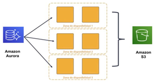
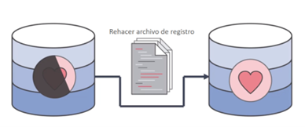
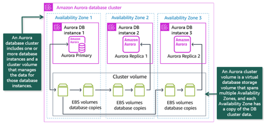

Amazon Aurora
Amazon Aurora es un motor de base de datos relacional compatible con MySQL y PostgreSQL optimizado para la nube. Combina el rendimiento y la disponibilidad de las bases de datos comerciales de alta gama con la simplicidad y la rentabilidad de las bases de datos de código abierto. Ofrece dos modelos, el clásico basado en instancias y un modelo serverless en el cual se contratan unidades de computación (ACU).
Al estar desarrollado de forma nativa por Amazon, Amazon Aurora se adapta mejor a la infraestructura en coste, rendimiento y alta disponibilidad. Está pensado como un subsistema de almacenamiento distribuido de alto rendimiento, ofreciendo automatización de las tareas que requieren mucho tiempo, como el aprovisionamiento, la implementación de parches, las copias de seguridad, la recuperación, la detección de errores y su reparación.
Aurora replica varias copias de los datos en múltiples zonas de disponibilidad y realiza copias de seguridad continuas de los datos en S3.

Respecto a la seguridad, hay varios niveles disponibles, incluidos el aislamiento de la red con VPC, el cifrado en reposo por medio de claves creadas y controladas con AWS KMS y el cifrado de los datos en tránsito mediante SSL.
Respecto al coste, en un ejemplo de una instancia de Aurora compatible con MySQL con dos procesadores y 8GB de RAM, en este caso, la db.t4g.large, el precio se queda en 106$ mensuales.
Amazon Aurora está diseñado para tener una alta disponibilidad: almacena varias copias de sus datos en varias zonas de disponibilidad con respaldos continuos en Amazon S3. Amazon Aurora puede utilizar hasta 15 réplicas de lectura para reducir la posibilidad de perder los datos. Además, Amazon Aurora está diseñada para la recuperación instantánea de fallos si la base de datos primaria no está en buen estado.
Después de que ocurra un error en la base de datos, Amazon Aurora no necesita reproducir nuevamente el registro de rehacer desde el último punto de control de la base de datos. En su lugar, lo realiza en cada operación de lectura. Se reduce el tiempo de reinicio después de un error en la base de datos a menos de 60 segundos en la mayoría de los casos.

Cluster de Aurora
Un clúster de base de datos Aurora consiste en una o más instancias de base de datos y de un volumen de clúster que administra los datos de esas instancias de base de datos. Un volumen de clúster de Aurora es un volumen de almacenamiento de base de datos virtual que abarca varias zonas de disponibilidad, de modo que una de esas zonas tiene una copia de los datos del clúster de bases de datos.
Un clúster de bases de datos Aurora se compone de dos tipos de instancias de base de datos:
- Instancia de base de datos principal: admite operaciones de lectura y escritura y realiza todas las modificaciones de los datos en el volumen de clúster. Cada clúster de bases de datos Aurora tiene una instancia de base de datos principal.
- Réplica de Aurora: se conecta con el mismo volumen de almacenamiento que la instancia de base de datos principal y solo admite operaciones de lectura. Cada clúster de bases de datos Aurora puede tener hasta 15 réplicas de Aurora, además de la instancia de base de datos principal. Se puede manterner una alta disponibilidad localizando réplicas de Aurora en distintas zonas de disponibilidad. Aurora cambiará automáticamente a una réplica de Aurora en caso de que la instancia de base de datos principal deje de estar disponible. Es posible especificar la prioridad de conmutación por error para réplicas de Aurora. Las réplicas de Aurora también pueden descargar las cargas de trabajo de lectura desde la instancia de base de datos principal.

Endpoints personalizados
Se pueden crear endpoints personalizados para escenarios específicos. Por ejemplo, si se tiene una aplicación web con tráfico de lectura y escritura, y un servidor de informes solo de lectura, podríamos querer asegurarnos de que el tráfico de lectura de ambos se dirija a diferentes instancias de lectura para equilibrar la carga. Este método también es útil si se crea instancias de lectura de diferentes tamaños para adaptarse a diferentes aplicaciones, por lo que el servidor de informes podría necesitar conectarse a la instancia de lectura más grande que la aplicación web. Se puede usar puntos de conexión personalizados para crear grupos de instancias de lectura y escritura, lo que permite una configuración muy específica. Aurora detendrá automáticamente el tráfico dirigido a una instancia promovida, eliminada o apagada. También se puede indicar a Aurora que agregue nuevas instancias a un punto de conexión personalizado automáticamente según la lista de exclusiones y estática.
Aurora Global Database
Aurora Global Database permite crear un clúster Aurora interregional donde se pueden enviar solicitudes de lectura a nivel mundial. Esto permite tener réplicas de lectura en las mismas regiones que las aplicaciones y usuarios, lo que reduce considerablemente la latencia y mejora el rendimiento de las aplicaciones.
También ofrece una recuperación rápida tras una interrupción regional, ya que cualquiera de las regiones secundarias/de lectura puede convertirse en una región de escritura principal en menos de un minuto.
La activación de la Base de Datos Global no afecta al rendimiento, ya que la replicación se gestiona en la capa de volumen del clúster. La replicación interregional es asíncrona, pero suele sufrir retrasos inferiores a un segundo, lo que la convierte en una buena solución para cargas de trabajo globales con gran volumen de lectura.
Tiene un límite máximo de cinco regiones secundarias, lo que le permite operar en seis regiones simultáneamente (incluida la región principal). Los nodos de las regiones secundarias pueden diferir en tamaño y tipo de los de la región principal, lo que permite una alta personalización para adaptarse a los distintos casos y patrones de uso. Por ejemplo, si se desea operar en tres regiones, pero la tercera tiene muchos menos clientes, se podría aprovisionar una instancia t3.medium allí en lugar de una instancia m5.xlarge en las otras dos regiones.
Aurora Serverless
Amazon Aurora Serverless es una configuración de autoescalado bajo demanda para Aurora donde la base de datos se inicia, para y escala (arriba y abajo) automáticamente dependiendo de las necesidades de la aplicación.
En el modelo serverless, la capacidad de cómputo no se asigna de forma fija a instancias predefinidas, sino que se ajusta automáticamente según la carga de trabajo en tiempo real. Esto significa que los usuarios no tienen que preocuparse por gestionar servidores, ya que la infraestructura se escala y ajusta automáticamente, proporcionando flexibilidad y optimización de costes.
Aurora Serverless escala automáticamente en una fracción de segundo y pasa de gestionar unos pocos cientos de transacciones a cientos de miles. También se pausa cuando no está en uso, lo que lo hace rentable. Cuando Aurora Serverless se pausa, puede tardar varios segundos en reactivarse y permitir que las transacciones se reinicien. Esto es importante, ya que el periodo de reinicio no es instantáneo y, por lo tanto, se debe decidir cuidadosamente si la carga de trabajo funcionará eficazmente con Aurora Serverless. Los mejores casos de uso para Aurora son cuando la carga de trabajo es impredecible, con picos y caídas bruscas de uso. Aurora puede escalar vertical y horizontalmente casi instantáneamente para mantener el mismo nivel de rendimiento para los usuarios finales, independientemente de la carga de trabajo.
Aurora Serverless ofrece las mismas funciones que Aurora, incluyendo tablas globales y réplicas de lectura. También puede combinar un clúster para incluir nodos Serverless y nodos aprovisionados estándar. Esto se puede usar para agregar rápidamente un escalamiento totalmente automatizado a cualquier clúster Aurora, incluso a uno que ya esté en ejecución.
Aurora Serverless es especialmente útil en los siguientes casos de uso:
- Cargas de trabajo variables: Cuando tenemos cargas de trabajo que tienen incrementos de actividad repentinos e impredecibles. Con Aurora Serverless la base de datos escala la capacidad automáticamente (hacia arriba o hacia abajo) para ajustarse a las necesidades de los picos de carga y para el cese de los mismos.
- Nuevas aplicaciones: Al desarrollar una aplicación nueva, si no estamos seguros del tamaño de la instancia que necesita nuestra aplicación, si usamos Aurora Serverless, podemos configurar un clúster con una o varias instancias de base de datos y beneficiarnos de su autoescalado.
- Desarrollo y pruebas: Con Aurora Serverless, es posible crear instancias de BD con una capacidad mínima baja. Se puede establecer la capacidad máxima de manera que esas instancias puedan ejecutar cargas de trabajo sustanciales sin quedarse sin memoria. Cuando la BD no está en uso, las instancias escalan hacia abajo para evitar cargos innecesarios.
- Planificación de la capacidad: Se ajusta la capacidad de la base de datos y se verifica la capacidad óptima para la carga de trabajo modificando el tipo de instancia de BD de todas las instancias de un clúster. Pero con Aurora Serverless, se puede evitar este trabajo administrativo. Se pueden determinar las capacidades máxima y mínima lanzando la carga de trabajo y comprobando cuántas instancias escalan. Se pueden cambiar las instancias de BD de provisionadas a Aurora Serverless y al revés. No se necesita crear un clúster nuevo ni una instancia de BD nueva en tales casos.
Se crea un punto de enlace de base de datos sin especificar el tamaño de la clase de instancia de base de datos. Se especifican Unidades de Capacidad de Aurora (ACU). Cada ACU es una combinación de capacidad de memoria y procesamiento. El almacenamiento de la base de datos escala automáticamente de 10 Gibibytes (Gib) a 64 Tebibytes (Tib), que equivale a un clúster de almacenamiento de Aurora estándar.
El punto de enlace de la base de datos se conecta a una flota de servidores proxy que direcciona la carga de trabajo a una flota de recursos. Aurora Serverless escala los recursos automáticamente en función de las especificaciones de capacidad mínima y máxima.
Se paga por la capacidad de la base de datos que se utiliza por segundo cuando la base de datos está activa y se puede migrar entre configuraciones estándar y sin servidor. Se paga el número de ACU que se utiliza.